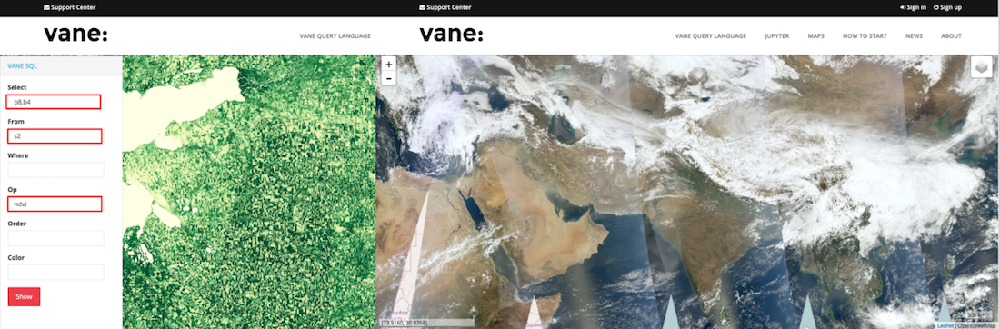
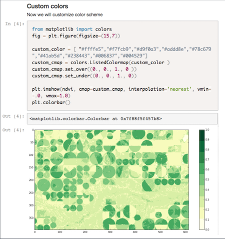
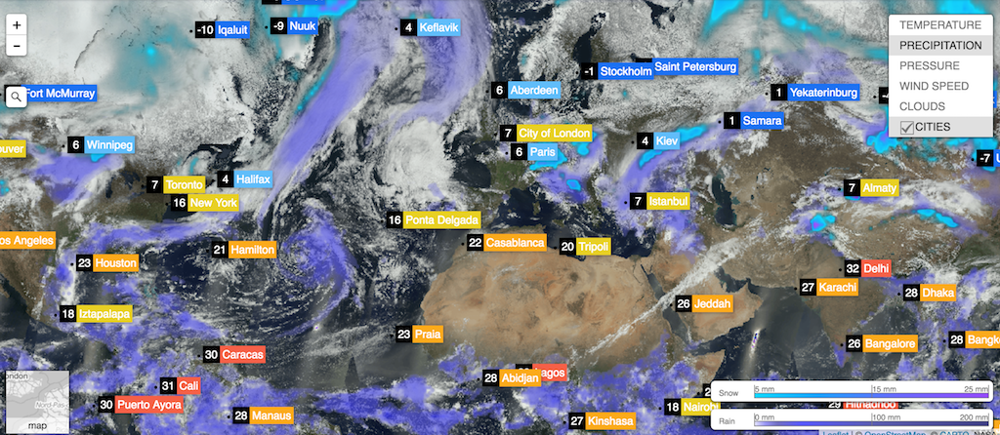
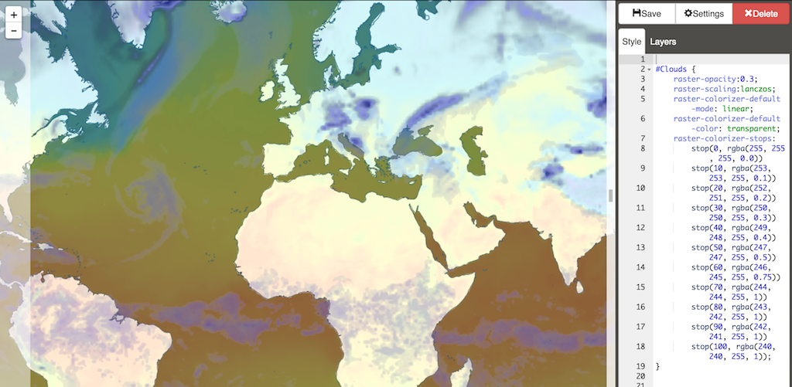
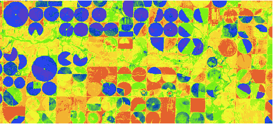

vane:
The geospatial platform for online processing of satellite and weather data
About
Our mission is to make a data of Environment open and available through easy to use cloud products and APIs to power new innovative applications with imagery, weather forecasts, and other data feeds that are updatated in real time.
— Openweathermap.org - Weather APIs
— OWM.io - VANE platform and tools
VANE Query language
SQL fashioned language for intuitive queries to process and get data:
Select |
Apply |
Get |
|---|---|---|
|
|
|
http://sat.owm.io/sql/{z}/{x}/{y}?select={select}&from={from}&where={where}&order={order}&op={op}&APPID={APIKEY}
Visual tools
Get an immediate result with ready-to-use examples, SQL viewer, CartoCSS Map Editor

Analytic tools
Compute and process data, prototype and share your results using Python environment

How to create online products?
Online products
Global Base Map
Create your own Base Map consisting of satellite images with different resolution and updated continuously. Customize queries to get True Color maps, False color, NDVI for vegetation analysis, NDWI for water resouses analysis, etc. Integrate maps to your apps or GIS immediately
MODIS Base Map - VANE Language
MODIS True color imagery is used for low zoom levels. The use of VANE language allows to get the most recent MODIS imagery (less than 1 hour after satellites path) along with past day imagery to cover the entire Earth.
from=modis
color=modis
order=last
http://{s}.sat.owm.io/sql/{z}/{x}/{y}?select=b1,b4,b3&from=modis&order=last&color=modis&APPID={APIKEY}Combine MODIS with weather maps

Display current weather in cities with weather overlays
Style weather maps with Map CSS Editor
#Snow {
raster-opacity:0.7;
raster-scaling:lanczos;
raster-colorizer-default-mode: linear;
raster-colorizer-default-color: transparent;
raster-colorizer-stops:
stop(0, transparent)
stop(5, #00d8ff)
stop(10, #00b6ff)
stop(25.076, #9549ff);
}

Base Map - True color
Select |
Apply |
|---|---|
|
|
Base Map - False color
Select |
Apply |
|---|---|
|
|
Base Map - indexed maps
Near-infrared and red spectral bands are used to calculate and monitor health vegetation growth. This index is mapped from a white to green hue. NDVI is strongly important for agriculture and Farm management applications.
Use op=NDVI to apply operation to any two spectral bands.
VANE analytic tools include Jupyter notebooks. Try it to fetch weather and satellite data, make a research on environment, prototype your app, save and share results in a form of articles
- calculate NDVI values
- detect changes on satellite images
- build weather charts, etc.
Examples and how-tos
import sys, os
from vane import sql, utils
lat = 46.8284
lon = 38.5386
scenes = sql.search([lon, lat])
print( '%s Scenes found ' % len(scenes))
for f in scenes:
print( "%s clouds %d" % ( f['date'], f['clouds']) )
Cases - Agriculture
Agriculture & smart farming
Combine in your App:
NDVI Base Map (API)
http://sat.owm.io/sql/{z}/{x}/{y}?select=b8,b4&from=s2&op=ndvi&order=last&APPID={APIKEY}
History weather (API)
http://history.openweathermap.org/data/2.5/history/city?lat={lat}&lon={lon}&type=hour&start={start}&end={end}&APPID={APIKEY}
Be creative :)
Get NDVI by polygon and apply your custom colors
http://sat.owm.io/sql?from=s2&select=b8,b4&where=day=2016-07-10&op=ndvi&polygon=
{"type":"Feature","geometry":{"type":"Polygon","coordinates":
[[[-102.73,34.43],[-102.73,34.49],[-102.57,34.49],[-102.57,34.43],[-102.73,34.43]]]}}&color=0:d93f2aff;0.05:df452cff;0.1:e66c2eff;0.15:e4622dff;0.2:f2b331ff; 0.25:f7d932ff;0.3:eff630ff;0.35:b0f321ff;0.4:80f116ff;0.45:76f013ff; 0.5:74ed17ff;0.55:6cde28ff;0.6:50ab56ff;0.65:317b83ff;0.7:0648b3ff; 0.75:1f46f0ff;0.8:2d45e9ff;0.85:533dcaff;0.9:783bb1ff;1:a342aeff;&APPID={APIKEY}

Learn more - owm.io/agri
Contact us
- Openweathermap.org — Weather APIs
- OWM.io — VANE platform and tools
- VANE Workshops - blog for developers